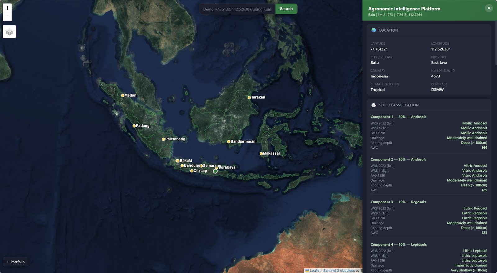
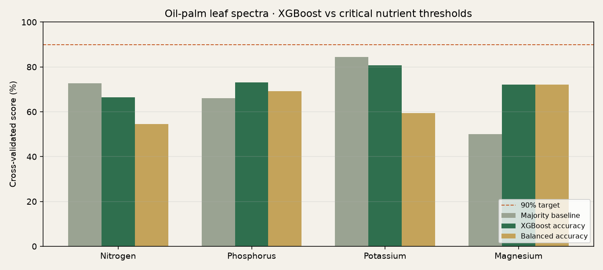
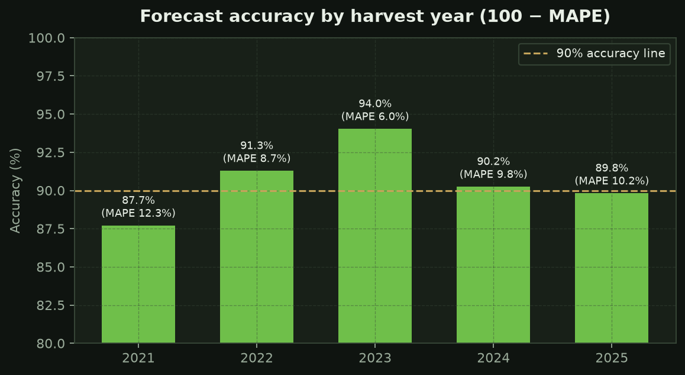

Agronomic Intelligence
Web-based agronomic and geospatial screening for any location in Indonesia: soil profile, ERA5 rainfall normals, and a six-month climate outlook.
Geospatial AnalyticsClimate DataWebGIS
Showcases
Research turned into tools you can open and use in the browser.

Web-based agronomic and geospatial screening for any location in Indonesia: soil profile, ERA5 rainfall normals, and a six-month climate outlook.

XGBoost classification of leaf N, P, K, and Mg status from 325–1075 nm spectra against oil-palm critical thresholds, with 66–81% cross-validated accuracy.

Walk-forward Sentinel-2 forecast of tonnes of cane per hectare with about 10% MAPE using a one-component PLS model and mid-season drought signals.